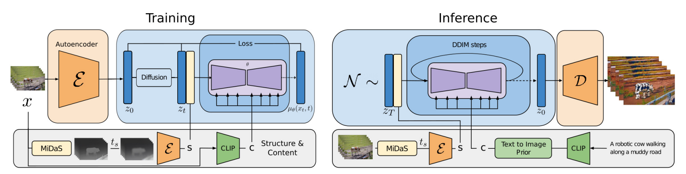
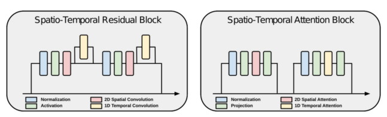
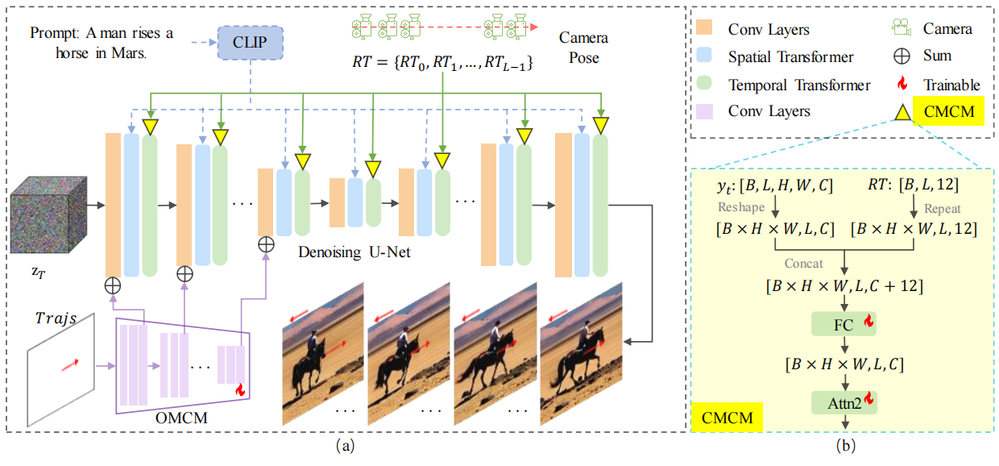
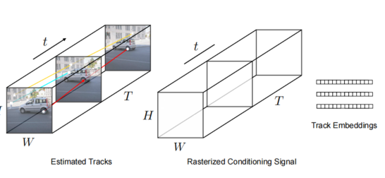
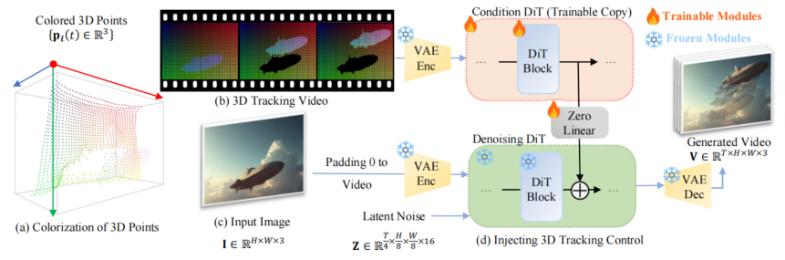
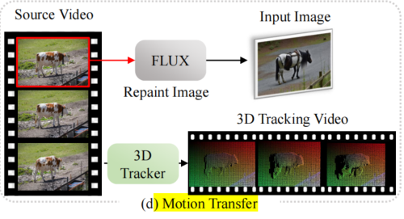

motion-transfer
动作迁移任务系列论文
输入参考视频，提取参考视频中人的动作，生成一段视频，另一个人做相同的动作
- TokenFlow
TokenFlow: Consistent Diffusion Features for Consistent Video Editing
通过在扩散特征空间中强制一致性来实现一致的运动传递
zhihu: TokenFlow：实现视频编辑一致性的创新方法
TokenFlow方法确保编辑后的视频特征与原始视频特征保持相同水平的一致性，实现了视频编辑的连贯性。该方法无需训练或微调，能够与现有的文本到图像编辑技术无缝集成，确保视频编辑的一致性和高质量输出。
- DiTFlow
Video Motion Transfer with Diffusion Transformers
提出 Attention Motion Flow 作为 DiT 上运动传递的指导
- CCEdit
CCEdit: Creative and Controllable Video Editing via Diffusion Models
GitHub - RuoyuFeng/CCEdit: CCEdit: Creative and Controllable Video Editing via Diffusion Models
gen-1
Structure and Content-Guided Video Synthesis with Diffusion Models
采用深度估计引导运动

左图为训练过程。输入视频 x 使用固定编码器 编码为 并加噪到 。由MiDaS得到深度图，对深度图进行次模糊和下采样迭代，然后编码得到结构表示信息s，使用CLIP图像编码器对其中一帧进行编码来提取内容表示 c。然后将 s 与 连接，通过交叉注意块提供的 c ，学习潜在空间中的去噪过程
右图是推理过程，由MiDaS得到深度图，对深度图编码得到结构表示信息s，使用CLIP文本编码器将prompt编码为c。二者引导去噪过程。
控制要从输入视频中保留的结构量。训练过程中在0到之间随机采样得到，推理过程可以控制此参数以实现不同的编辑效果
另外本文还在Unet中加入了时序层
Unet由Residual blocks 和transformer blocks组成。如下图，左图在残差块中的每个 2D空间卷积后添加 1D 时间卷积。右图在每个 2D 空间注意力块后添加 1D 时间注意力块

使用内部数据集240M图片和6.4M视频进行训练，训练细节略（论文里有详细说）
MotionCtrl
MotionCtrl: A Unified and Flexible Motion Controller for Video Generation
GitHub - TencentARC/MotionCtrl: Official Code for MotionCtrl [SIGGRAPH 2024]
通过加入运动控制器来实现运动传递
运动分为对象运动和相机运动。大多数与视频生成中的运动控制相关的先前工作要么主要关注其中一种运动，要么缺乏对这两种运动类型的明确区分。
本工作使用VideoCrafter1(LVDM的增强版) 作为基础视频生成模型
MotionCtrl 由两个模块组成：相机运动控制模块 Camera Motion Control Module (CMCM) 和对象运动控制模块 Object Motion Control Module(OMCM)。
CMCM 通过其temporal transformer将一系列相机姿势在时间上集成到视频生成模型中，将生成的视频的全局运动与提供的相机姿势对齐。
OMCM 在空间上将有关对象运动的信息整合到视频生成模型的卷积层中，指示每个生成帧中对象的空间定位。

模型架构图
CMCM
LVDM 中的temporal transformer包含两个自注意模块，可促进视频帧之间的时间信息融合。为了最大限度地减少对 LVDM 生成性能的影响，CMCM 仅涉及时间变换器中的第二个自注意模块。如上图(b)，考虑相机姿势序列。相机姿势由其 3×3 旋转矩阵和 3×1 平移矩阵表示，所以，其中 𝐿 表示生成视频的长度。RT和temporal transformer第一个自注意模块的输出拼接，再经过全连接层更改最后一个维度的大小，输入到temporal transformer中的第二个自注意模块中
OMCM
使用轨迹（𝑇𝑟𝑎𝑗𝑠）控制生成视频的物体运动，轨迹通常表示为，其中$(𝑥_𝑖 ,𝑦_𝑖),𝑖 ∈ [0, 𝐿 − 1] $ 表示轨迹在空间位置 处穿过第 $ i$ 帧。为了明确地揭示物体的移动速度，我们将 𝑇𝑟𝑎𝑗𝑠 表示为
𝑇𝑟𝑎𝑗𝑠 被注入到带有 OMCM 中，经过多个卷积和下采样，应用于 Denoising U-Net 的编码器，以平衡生成的视频的质量和物体运动控制的能力
其实是和Motion Prompting差不多的二维平面运动轨迹，只不过这个没有考虑轨迹上点的可见性，而考虑了点在各个位置的速度
两个数据集：
-
一个包含字幕和相机姿势的注释：增强的Realestate10k数据集，该数据集最初用相机运动信息进行注释，使用Blip2生成字幕
-
另一个包含字幕和物体运动轨迹的注释：增强的WebVid数据集，使用 ParticleSfM 中提出的运动分割算法合成物体运动轨迹
分别使用这两个带注释的数据集依次训练CMCM和OMCM
从头训练
CMCM 和 OMCM 均使用 Adam 优化器优化，批量大小为 128，学习率为 1𝑒 −4，跨 8 个NVIDIA Tesla V100 GPU。CMCM 通常需要大约 50,000 次迭代才能收敛，OMCM 初始训练阶段在密集轨迹上进行 20,000次迭代，然后再使用稀疏轨迹进行微调 20,000 次迭代。
Motion Prompting
Motion Prompting: Controlling Video Generation with Motion Trajectories
Motion Prompting: Controlling Video Generation with Motion Trajectories
利用2D 运动作为prompt来实现很好的运动迁移
文本很难详细传递运动信息，所以本文引入运动轨迹来编码空间（和时间）稀疏和密集的运动：跟踪视频中一组点的运动和可见性。
motion prompt expansion：将高级用户请求（比如说旋转猫的头）转换为详细的运动轨迹。
下面详细说说轨迹如何获得：
我们用表示一组长度为的点轨迹，其中时间步长的轨迹的二维坐标为。此外，我们将轨迹的可见性表示为,这是一个由 1 和 0 组成的数组，其中 0 表示屏幕外或被遮挡的轨迹，1 表示可见轨迹。
使用 ControlNet，在时空体积中编码轨迹。将每一个轨迹关联到唯一且随机的嵌入向量, 然后对于轨迹访问到的且轨迹可见的每一个时空位置，将放在该位置
如下图，左图为从视频中获取估计的轨迹()，中间为编码为 T ×H × W×C 维时空体积©，右图为每条轨迹的唯一嵌入，写入轨迹访问到的且轨迹可见的每一个时空位置
嗯，这个也是2D平面轨迹，没有考虑点在各个位置的速度

基础模型：Lumiere。
数据集：准备了一个与轨迹配对的视频数据集，通过运行 BootsTAP 得到点跟踪
跟随ControlNet的方法进行训练。conditioning signal is given to a trainable copy of the base model’s encoder ，使用 standard diffusion loss
这一工作也尝试了从源视频中提取运动轨迹并将其应用于图像。
DiffusionAsShader(DaS)
Diffusion as Shader: 3D-aware Video Diffusion for Versatile Video Generation Control
基于CogVideoX，借助3D tracking videos微调得到。3D tracking videos由一组移动的 3D 点渲染得到，这些点的颜色由它们在第一帧中的坐标决定
为了注入3D控制信息，DaS采用和ControlNet类似的设计。使用预训练的VAE编码器将3D tracking videos编码为latent vector。然后复制 Denoising DiT（参数冻结） 的前18个块作为 Condition DiT(可训练)。在Condition DiT中，提取每个 DiT 块的输出特征，用零初始化的线性层对其进行处理，并将该特征添加到 Denoising DiT 的相应特征图中。使用 diffusion loss 微调 Condition DiT。

DaS的架构
（a）我们根据动态 3D 点的坐标对其进行着色，以获得（b）3D tracking videos（c）输入图像和 3D 跟踪视频由（d）基于transformer的latent diffusion和 VAE 处理。3D tracking videos由 Denoising DiT 的可训练副本处理，并使用零线性层将 3D 跟踪视频中的条件特征注入去噪过程。
数据集：构建了一个包含真实世界视频和合成渲染视频的训练数据集。真实世界视频来自 MiraData，采用 SpatialTracker 来检测 3D 空间中的 3D 点及其轨迹。合成渲染视频由 Mixamo 的网格(meshes)和运动序列渲染得到。
动作迁移流程：

-
获取原视频第一帧的深度图
-
应用深度到图像 FLUX 模型 将第一帧的深度图绘制为由文本提示引导的目标外观，作为生成视频的第一帧
-
使用SpatialTracker ，从原视频生成3D tracking videos
-
使用DaS结合生成视频的第一帧和3D tracking videos，得到目标视频
实验：
与CCEdit 和 TokenFlow比较：“Text-Ali”是生成的视频与给定的文本提示之间的语义 CLIP 一致性。“Tem-Con”是相邻帧之间的时间 CLIP 一致性。

DaS和上面的Motion Prompting很像。Motion Prompting用了2D点轨迹，而DaS使用3D点轨迹
思考：能否把3D点云变成3D向量场